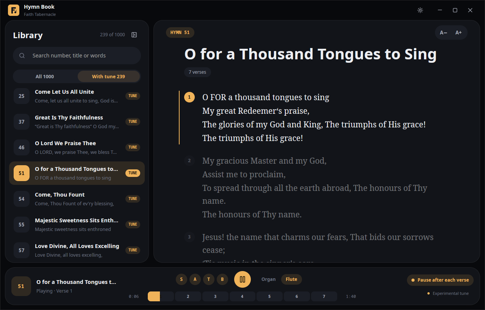
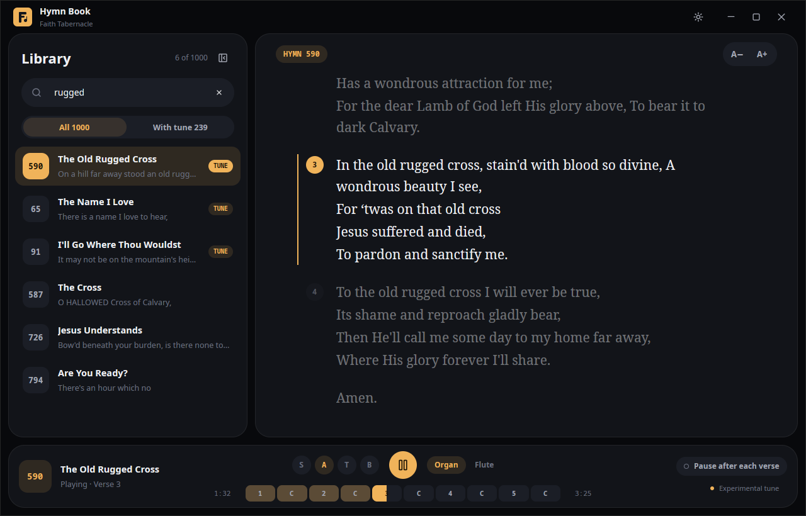
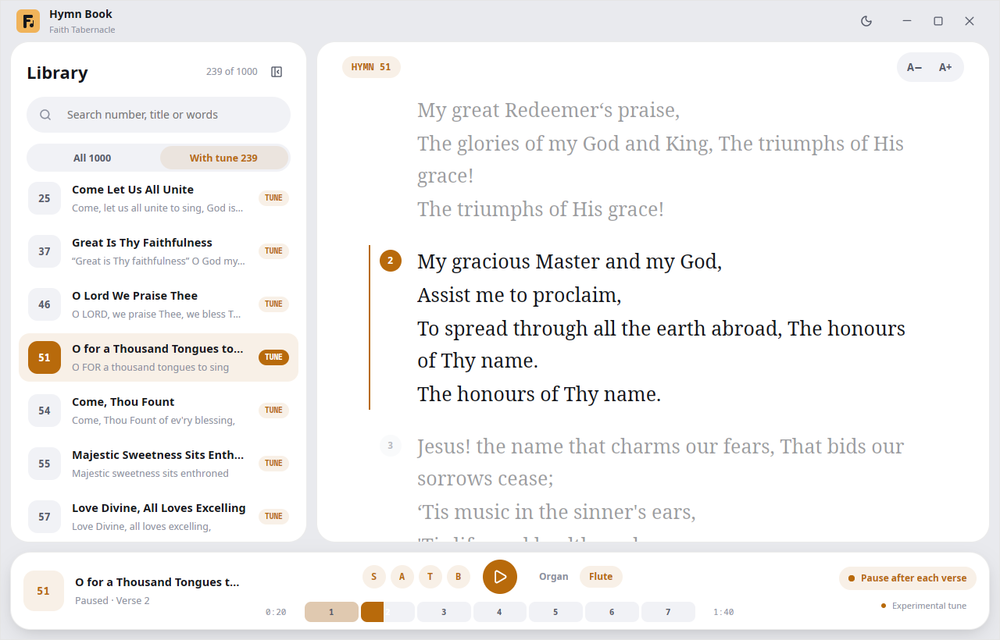

Lyrics that follow the song
The verse being sung is highlighted and eased into view while the others fade back – you never lose your place.
Browse all 1,000 Faith Tabernacle hymns, read the words, and play the tune – verse, chorus, and every voice – so nobody forgets how to sing.
Free foreverNo accountWorks offline

Forty-four seconds. The music is the app itself, playing The Old Rugged Cross.
Turn your sound on.
A hymn is not one tune played once. It is verse, chorus, verse, chorus. Hymn Book plays it like that – and lets you jump to any part.
A bar of verse and chorus segments, sized by length, shows where you are in the hymn.
Want verse 3? Tap it. The music and the words go straight there.
Turn on pause after each verse and the player waits for you after every verse and chorus.
Mute everything except Soprano, Alto, Tenor or Bass and practise your own line.
Interactive preview – the real app plays the sound.
Everything is built to help you sing, not to get in the way.
The verse being sung is highlighted and eased into view while the others fade back – you never lose your place.
Every verse and chorus, sized by length, one tap away. Plus the voice buttons and pause-after-each-verse switch.
Soprano, Alto, Tenor, Bass – on or off. Try it.
By number, title, or a line you remember.
Easy on the eyes, day or night.


Pick your computer. One file, no account, no ads.
First time opening it? The app is not code-signed yet, so your computer may warn you. On Windows choose More info → Run anyway. On a Mac open the disk image, drag Hymn Book to Applications, then right-click it and choose Open. On Linux make the AppImage executable (right-click → Properties, or chmod +x).
Yes. Hymn Book is free and open source under the MIT license. There are no accounts, no ads and no tracking, and it works without an internet connection.
The tunes come from public-domain scores that we match to each hymn by its words. 239 of the 1,000 hymns are matched so far. Hymns without a tune still open and read perfectly. We are adding more all the time.
Not necessarily. These are standard public-domain arrangements, played on a church organ or flute, so your church may sing a different tune or harmony. That is why tunes are marked experimental – please tell us if one sounds wrong.
Please do. Report a wrong tune, share a public-domain score or MIDI, or suggest a feature on GitHub. If you know a tune by heart, you can write it down and we can turn it into sound.
From the Faith Tabernacle Hymn Book. Most hymns are old and in the public domain. If you are a rights holder and want an item removed, open an issue and it will be taken out promptly.
Download Hymn Book, sing along, and help us find every missing tune.